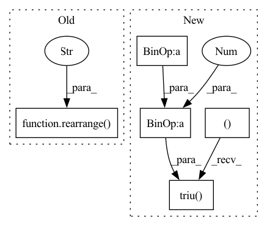

Pattern ID :36284
Before Change
if causal and q_start_index < (k_start_index + k_chunk_size - 1):
q_range = torch.arange(q_start_index, q_start_index + q_chunk_size, device = device)
k_range = torch.arange(k_start_index, k_start_index + k_chunk_size, device = device)
causal_mask = rearrange(q_range, "i -> i 1") < rearrange( k_range, "j -> 1 j" )
weight = weight.masked_fill(causal_mask, mask_value)
exp_weight = weight.exp()
weighted_value = einsum("b h i j, b h j d -> b h i d", exp_weight, v)After Change
weight = weight.masked_fill(~mask, mask_value)
if causal and q_start_index < (k_start_index + k_chunk_size - 1):
causal_mask = torch.ones((q_chunk_size, k_chunk_size), dtype = torch.bool, device = device).triu( q_start_index - k_start_index + 1 )
weight = weight.masked_fill(causal_mask, mask_value)
exp_weight = weight.exp()
weighted_value = einsum("b h i j, b h j d -> b h i d", exp_weight, v)In pattern: SUPERPATTERN
Frequency: 3
Non-data size: 5
Instances Fragment ID: 102710014
Project Name: lucidrains/memory-efficient-attention-pytorch
Commit Name: e4d09988df0bc8bdfc32cfd2d7202d061a640052
Time: 2022-03-22
Author: lucidrains@gmail.com
File Name: memory_efficient_attention_pytorch/memory_efficient_cosine_sim_attention.py
M Class Name: AnonimousClass
N Class Name: AnonimousClass
M Method Name: summarize_qkv_chunk(7)
N Method Name: summarize_qkv_chunk(7)
M Parent Class:
N Parent Class:
M File Name: memory_efficient_attention_pytorch/memory_efficient_cosine_sim_attention.py
N File Name: memory_efficient_attention_pytorch/memory_efficient_cosine_sim_attention.py
M Start Line: 68
M End Line: 70
N Start Line: 68
N End Line: 68
Before Change
k = self.k_proj(x_kv)
v = self.v_proj(x_kv)
q, k, v = (rearrange( x, "b n (h c) -> (b h) n c" , h=self.num_heads) for x in [q, k, v])
attn = torch.einsum("b i c, b j c -> b i j", q, k) * self.dp_scale
if pad_mask is not None:After Change
i = q.shape[2]
j = k.shape[2]
causal_mask = torch.ones((i, j), device=x_q.device, dtype=torch.bool).triu( j - i + 1 )
attn.masked_fill_(causal_mask, attn_max_neg)
attn = attn.softmax(dim=-1)
attn = self.dropout(attn) Fragment ID: 102710012
Project Name: krasserm/perceiver-io
Commit Name: c2b9af32775fd28f693dd1b572142935efd31b99
Time: 2022-09-25
Author: krasserm@googlemail.com
File Name: perceiver/model/core/modules.py
M Class Name: MultiHeadAttention
N Class Name: MultiHeadAttention
M Method Name: forward(6)
N Method Name: forward(5)
M Parent Class: nn.Module
N Parent Class: nn.Module
M File Name: perceiver/model/core/modules.py
N File Name: perceiver/model/core/modules.py
M Start Line: 64
M End Line: 93
N Start Line: 75
N End Line: 120
Before Change
if causal and q_start_index < (k_start_index + k_chunk_size - 1):
q_range = torch.arange(q_start_index, q_start_index + q_chunk_size, device = device)
k_range = torch.arange(k_start_index, k_start_index + k_chunk_size, device = device)
causal_mask = rearrange( q_range, "i -> i 1" ) < rearrange(k_range, "j -> 1 j")
weight = weight.masked_fill(causal_mask, mask_value)
weight_max = weight.amax(dim = -1, keepdim = True).detach()After Change
weight = weight.masked_fill(~mask, mask_value)
if causal and q_start_index < (k_start_index + k_chunk_size - 1):
causal_mask = torch.ones((q_chunk_size, k_chunk_size), dtype = torch.bool, device = device).triu( q_start_index - k_start_index + 1 )
weight = weight.masked_fill(causal_mask, mask_value)
weight_max = weight.amax(dim = -1, keepdim = True).detach()
weight = weight - weight_max Fragment ID: 102710010
Project Name: lucidrains/memory-efficient-attention-pytorch
Commit Name: e4d09988df0bc8bdfc32cfd2d7202d061a640052
Time: 2022-03-22
Author: lucidrains@gmail.com
File Name: memory_efficient_attention_pytorch/memory_efficient_attention.py
M Class Name: AnonimousClass
N Class Name: AnonimousClass
M Method Name: summarize_qkv_chunk(7)
N Method Name: summarize_qkv_chunk(7)
M Parent Class:
N Parent Class:
M File Name: memory_efficient_attention_pytorch/memory_efficient_attention.py
N File Name: memory_efficient_attention_pytorch/memory_efficient_attention.py
M Start Line: 67
M End Line: 69
N Start Line: 67
N End Line: 67